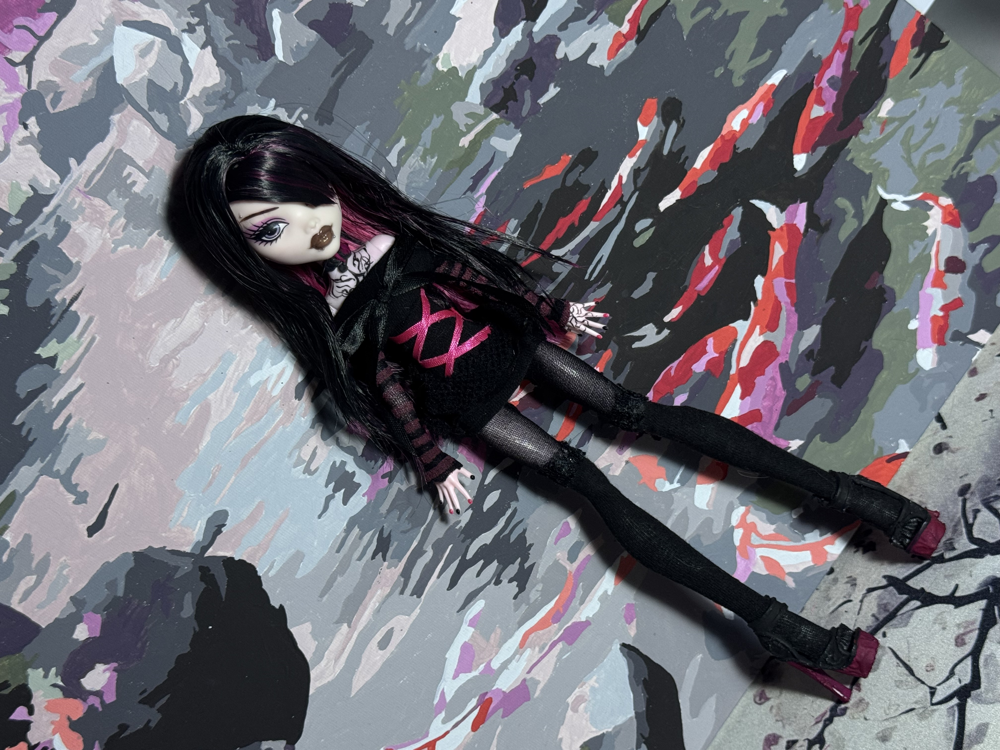
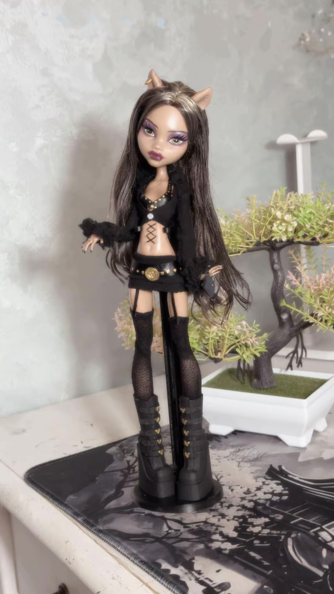
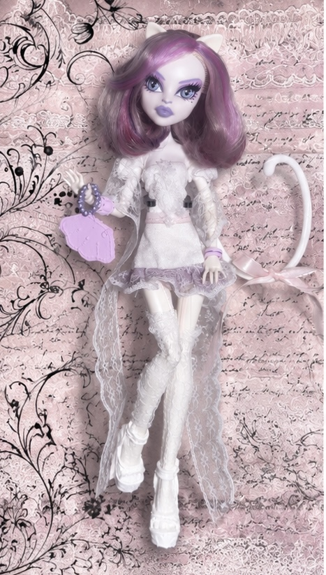
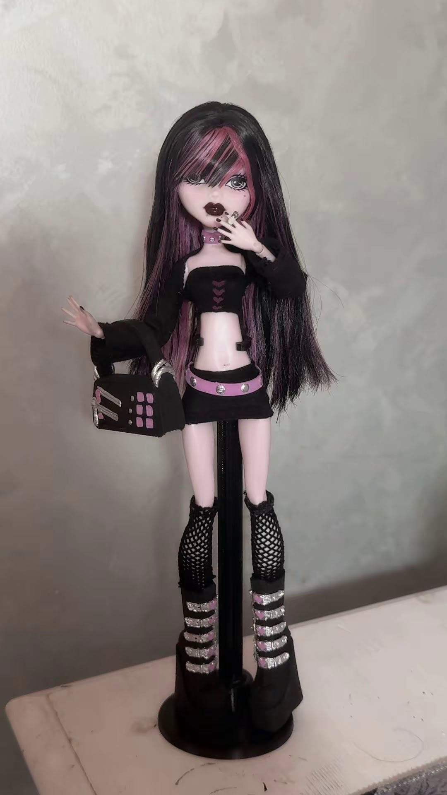
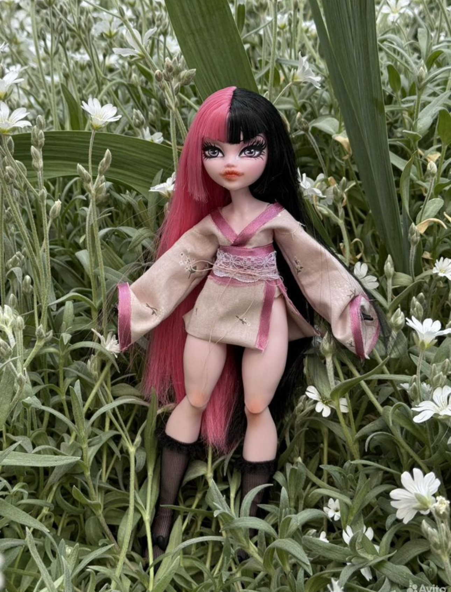
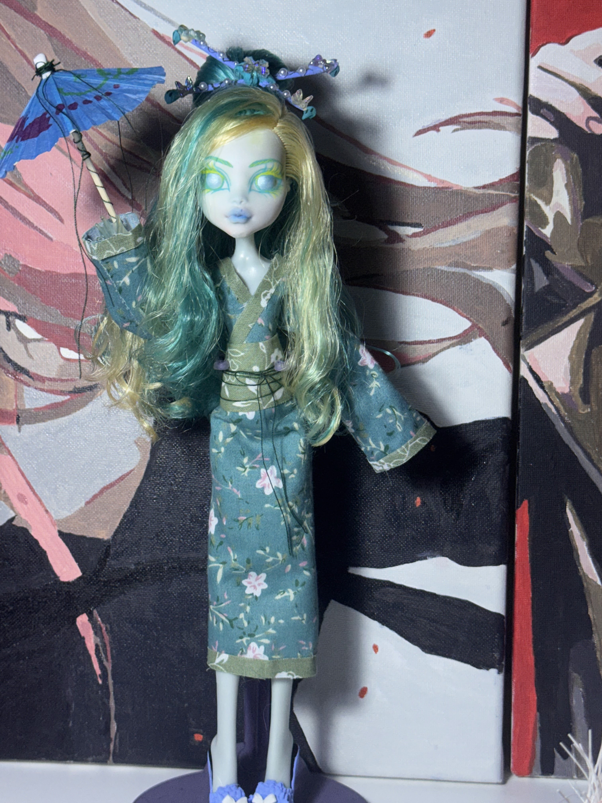
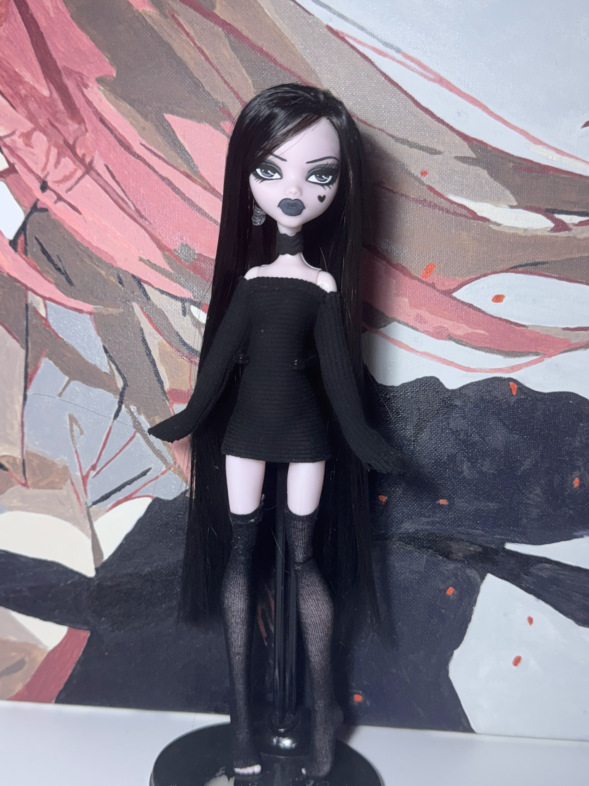

1 / 5
Draculaura emo ♡
Моя авторская кукла на базе Дракулауры. Чёрное мини-платье с сеточным поясом, корсетная завязка с розовой лентой, перчатки в розовую полоску в стиле 2007 года.
Куколка нашла дом
МОЁ ТВОРЧЕСТВО
Каждый ооак — отдельная история и идея. Здесь собраны мои авторские куклы и детали их образов.

Моя авторская кукла на базе Дракулауры. Чёрное мини-платье с сеточным поясом, корсетная завязка с розовой лентой, перчатки в розовую полоску в стиле 2007 года.
Куколка нашла дом

Моя авторская кукла на базе Клодин. Шубка с меховым воротником, кожаный лиф, чёрная мини-юбка с золотым поясом и чулочки с поясом для чулок.
Куколка нашла дом

Очень нежная куколка на базе Катрин. Кружево, белая юбочка с сиреневым подкладом, болеро и милый бантик на хвостике. Выполнен репеинт всего личика под заводскую печать.
Куколка нашла дом

Куколка на базе Дракулауры. Чёрная кофточка с сердечками посередине, высокие массивные ботинки, розовый пояс и сетчатые гольфы.
В продаже: 7000₽

Готический образ на базе Дракулауры. Перчатки и гольфы в сетку, мини-юбка в складку с розово-зелёным поясом. Частичный репеинт лица и пирсинг.
Куколка нашла дом

Авторский образ на базе Дракулауры G3 в японском стиле. Нежно-розовое кимоно в цветочек, кружевной пояс с элементами малинового атласа, веер и полный репеинт.
Куколка нашла дом

Ооак на базе Лагуны. Японская тематика, репеинт лица, бирюзовое кимоно, тапочки с бантом и зонтик.
Куколка нашла дом

Вампирский образ на базе подделки. Прошивка молочным шёлком, репеинт личика и чёрное мини-платье с чулками.
Куколка нашла дом